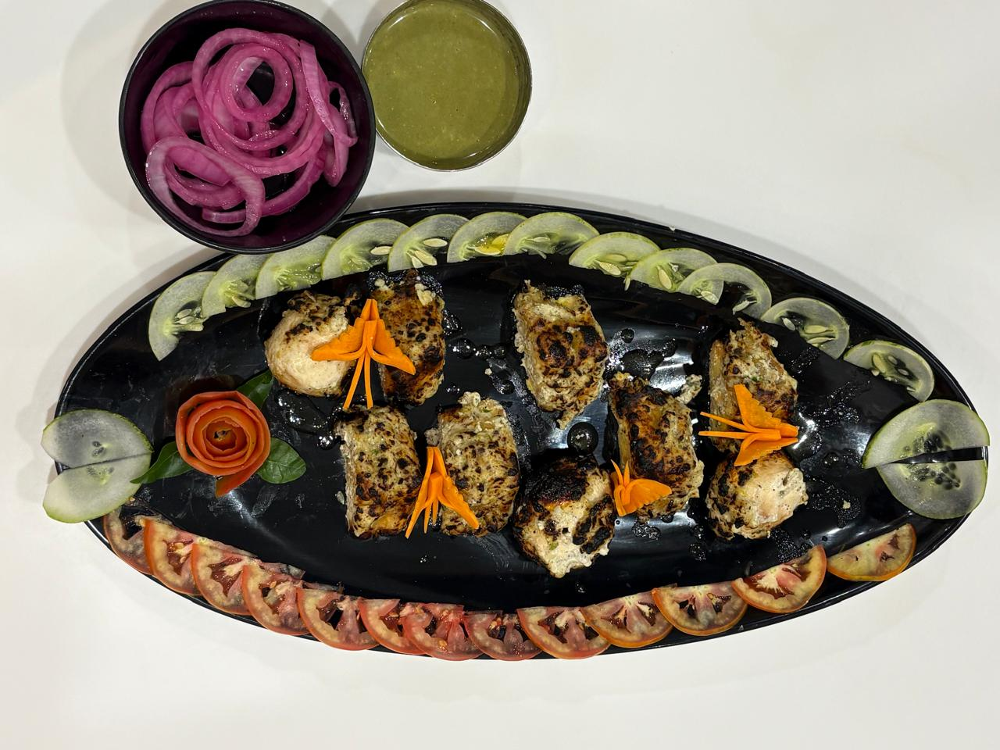
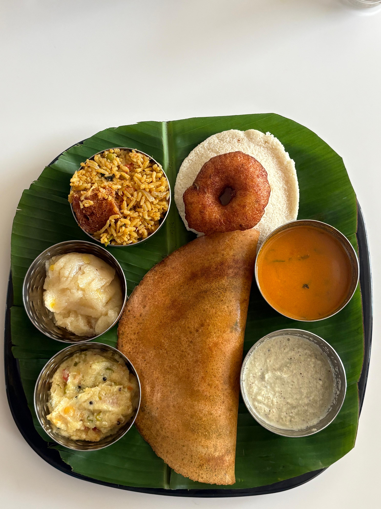

Midday hunger calls for a meal that is both satisfying and delicious. Mathuram Cafe is the premier destination for a wholesome lunch in Brahmavara. Located right Opposite Krishi Kendra at Laxmi Empire, we offer a diverse lunch menu that caters to all appetites, from light snacks to grand, multi-course feasts.

The Traditional South Indian Meal
For those who love tradition, our South Indian lunch offerings are a must-try. Experience the comforting flavors of home-style cooking with our rice preparations, flavorful sambars, tangy rasam, and fresh vegetable palyas. Our traditional meals are balanced, nutritious, and incredibly flavorful, making them the perfect midday fuel.
Robust North Indian Curries
If you are in the mood for something richer, our North Indian lunch menu will not disappoint. We serve a variety of deeply flavorful gravies, from creamy Paneer Butter Masala to robust Dal Makhani. Pair these with our freshly baked, soft, and buttery Tandoori breads (Roti, Naan, Kulcha) for a truly satisfying lunch experience.

Flavorful Biryanis and Rice Dishes
For a complete meal in one dish, explore our range of vegetarian Biryanis and Pulaos. Cooked with fragrant Basmati rice, premium whole spices, and fresh vegetables, our Biryanis offer a burst of flavor in every bite. Served with cooling raita, it's a lunch favorite among our patrons in Brahmavara.
A Cool and Comfortable Escape
The afternoon heat in Brahmavara can be intense. Escape into our fully air-conditioned fine-dine section and enjoy your lunch in cool, serene comfort. Our attentive staff ensures that your water glass is always full and your needs are promptly met, allowing you to relax and recharge.
Whether you are taking a quick lunch break from work or enjoying a leisurely afternoon meal with friends, Mathuram Cafe provides the ideal environment and menu.
Browse our extensive lunch menu and join us today for the most satisfying lunch in Brahmavara!